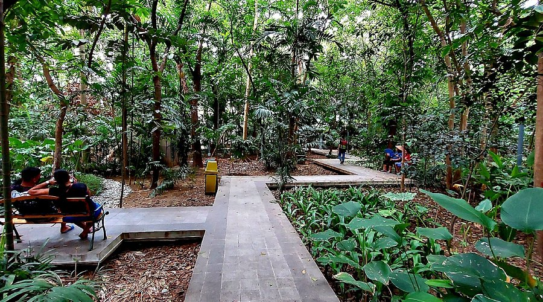
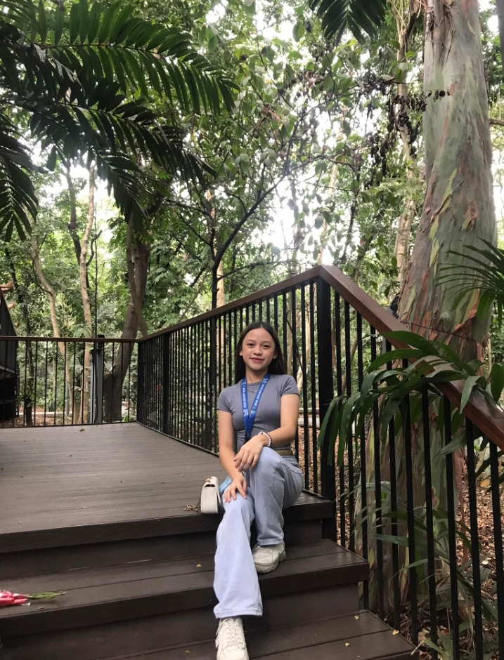
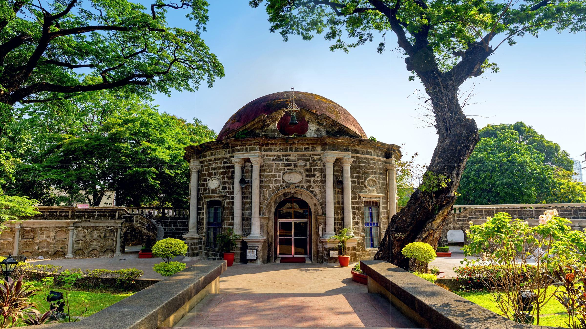
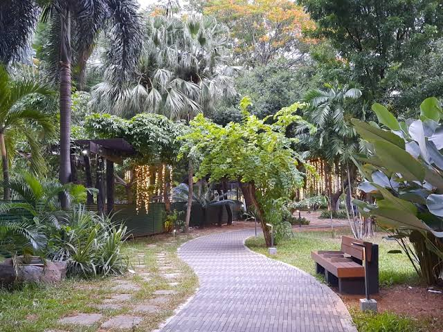

ARROCEROS FOREST PARK
📍 Antonio Villegas St, Ermita, Manila, 1000 Metro Manila
Known as Manila's "last lung", Arroceros Forest Park is filled with trees, walking paths, and fresh air.
View details
this is your guide to discovering peaceful and relaxing places in the heart of the city. From hidden parks and quiet gardens to spots and cozy places, this guide will help you find the perfect escape from Manila's busy streets. Whether you want to unwind, enjoy nature, or simply take a break, Find Calm in Manila connects you with destinations that offer comfort, serenity, and peace
Escape the Noise, Embrace the Peace.
As a person who enjoys calm and peaceful places with a beautiful view, I find comfort in being surrounded by nature.

📍 Antonio Villegas St, Ermita, Manila, 1000 Metro Manila
Known as Manila's "last lung", Arroceros Forest Park is filled with trees, walking paths, and fresh air.
View details
Belen, Paco, Manila, Metro Manila
📍Paco Park offers a quiet and relaxing atmosphere surrounded by historic walls and beautiful gardens.

📍 Legaspi St, Legaspi Village, Makati City, 1229 Metro Manila
Located in Makati, this park features shaded pathways, gazebos, and lush greenery.
